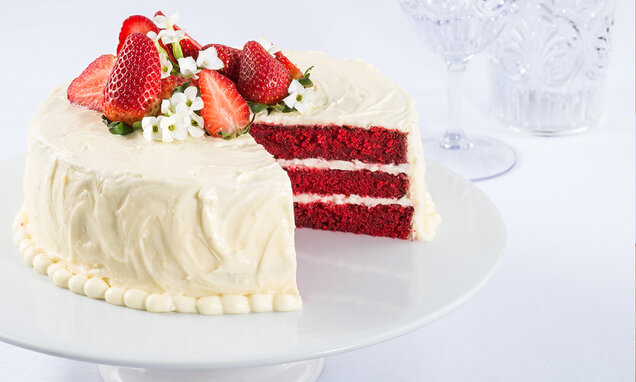

Ingredientes
- 1 xícara e meia (chá) de Leite Líquido NINHO® Forti+ Integral
- 1 colher (sopa) de suco de limão
- 1 xícara (chá) de manteiga sem sal em temperatura ambiente
- 1 xícara e meia (chá) de açúcar
- 3 ovos
- 1 colher (sopa) de essência de baunilha
- 1 xícara e meia (chá) de farinha de trigo
- 1 colher (sopa) de Chocolate em Pó 50%
- 1 colher e meia (sopa) de fermento em pó
- 1 colher (chá) de corante líquido vermelho
- 2 xícaras (chá) de cream cheese (450 g)
- Meia xícara (chá) de manteiga sem sal em temperatura ambiente
- 1 colher (sopa) de essência de baunilha
- 1 xícara e meia (chá) de açúcar de confeiteiro peneirado
Massa
Recheio e Cobertura
Modo de Preparo
- Em um recipiente, misture o Leite NINHO com o suco de limão. Reserve até talhar.
- Em uma batedeira, bata a manteiga com o açúcar até obter uma mistura esbranquiçada.
- Com a batedeira ligada, adicione os ovos, um a um. Acrescente a baunilha e bata.
- Em um recipiente, peneire a farinha de trigo, o Chocolate em Pó NESTLÉ e o fermento.
- Com a batedeira ligada em velocidade baixa, vá intercalando a adição do leite com o suco de limão e dos ingredientes secos peneirados.
- Adicione o corante e misture bem. A cor da massa deve ficar bem vermelha, se necessário, adicione mais corante.
- Despeje a mistura em três formas redondas (20 cm de diâmetro) forrada com papel manteiga no fundo e laterais e leve para assar em forno médio (180°C) preaquecido, por cerca de 50 minutos.
- Em uma batedeira, bata o cream cheese com a manteiga até obter um creme bem liso.
- Adicione a essência de baunilha e bata.
- Adicione o açúcar de confeiteiro e bata bem. Reserve em geladeira.
- Com a Massa já fria, corte-a no sentido horizontal em 3 partes.
- Utilize a própria forma que assou o bolo para fazer a montagem. Coloque uma das partes da massa e coloque uma camada de Recheio. Coloque a outra massa e mais um pouco de recheio, finalizando com a última massa. Leve ao freezer por cerca de 1 hora.
- Desenforme o bolo e cubra com a Cobertura. Utilize os próprios farelos do bolo e frutas vermelhas para a decoração.